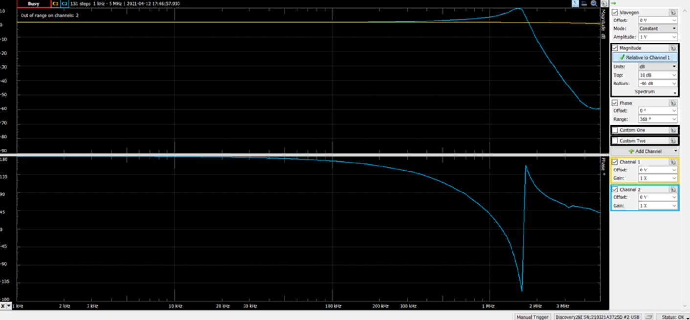
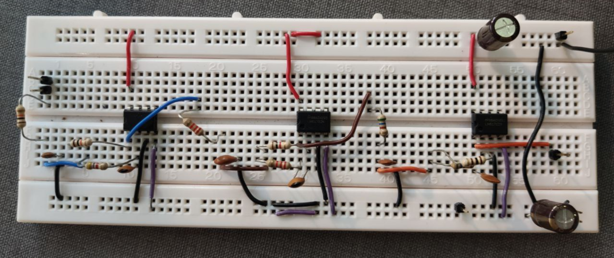
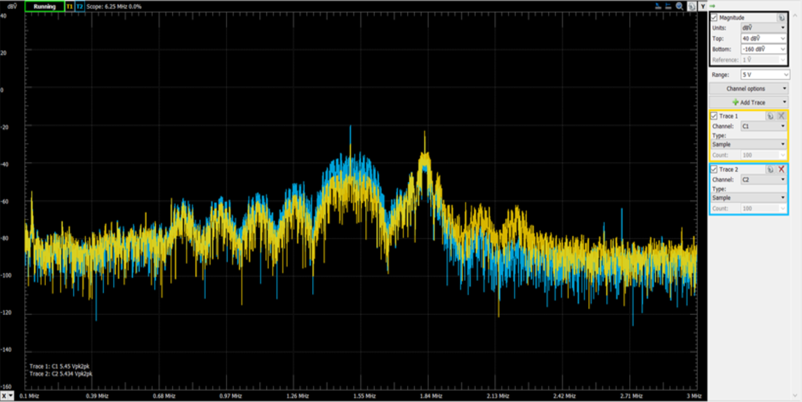

Course Projects
CS3237 - TI RTOS


- This was an individual work to program a real-time operating system (RTOS) using SensorTag CC2650. My contributions were as follows:
- Used embedded accelerometer to measure acceleration.
- Used embedded light sensor to measure ambient light intensities.
- Manipulate the LED light intensity based on the values obtained from the sensor readings.
- The demonstration below showcases the features mentioned above:
- Please find repository to CC2650 Project hereLearn more.
EE2026 - Waveform Generator using FPGA


- This was a pair work between two students. My contributions were as follows:
- Used embedded LED lights to indicate ambient noise level.
- Used embedded push-buttons and 7-segment display to indicate operational states.
- Changed waveform colours on the VGA display.
- In the demo below, it showcases how the 7-segment display would indicate operational states when the push-buttons are pressed:
EE2028 - Care Unit for the Elderly (C.U.T.E.)


- This was a pair work between two students. My contributions were as follows:
- Used embedded sensors e.g. light sensor to trigger system interrupts.
- Implemented a "make-shift" accelerometer to measure user's movements.
- Contributed to both "monitoring" (when user is alone) and "caretaker" (when user is under caretaker's supervision) mode's logic.
- Other miscellaneous features such as OLED display and button presses.
- Please find repository to C.U.T.E. Project hereLearn more.
EE2033 - Mini Project





| Parameters | Unit | Amplitude |
|---|---|---|
| Signal Frequency | Hz | 160k |
| Interference Frequency | Hz | 320k |
| Signal Amplitude | Nil | 0.15 |
| Interference Amplitude | Nil | 0.3 |
- The difficulty of this project is that the signal and interference is very close together and that the interference is 50% of the signal's amplitude.
- The filter that we design must be able to attenuate the unwanted signals (steep cut-off) while ensuring that the gain is strong enough to capture the original signal.
- This was a pair work between two students. My contributions were as follows:
- Designing and testing of prototypes.
- Building of filter circuit on the breadboard.